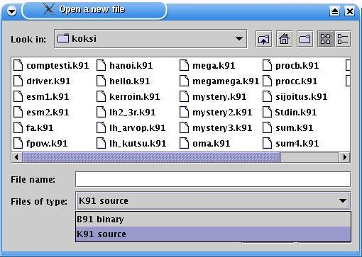
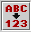
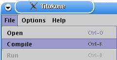
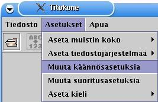
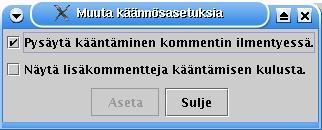
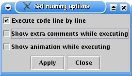
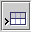
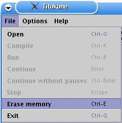
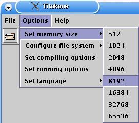
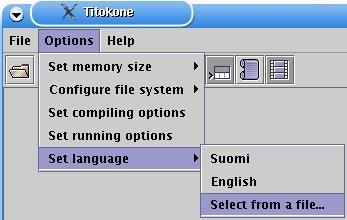

- Menus
- Code window
- Status
- Display
- Keyboard input
- Symbol table
- Registers
- Comments
Titokone is an assembler simulator, which is intended to show how symbolic assembly language is executed in a simple processor.
|
|
|
Jos olet jo asentanut Titokoneen, siirry suoraan Titokoneen toimintoihin.
2.1 Getting and installing Java |
Titokone is a TTK-91 machine language simulator written in Java. To run Titokone, you need a Java virtual machine (minimum version 1.4.2) installed. You can download an implementation of the Java virtual machine at http://java.sun.com. Follow their installation instructions.
It may be slightly difficult to find what you want at Sun's Java pages. To install just the virtual machine, look for "JRE", to install the development environment as well for making your own Java programs or for creating new translations for Titokone, look for "SDK". At the time of writing this, J2SE version 1.4.2, both SDK and JRE (the 2 is the platform number, version number is different) could be downloaded from http://java.sun.com/j2se/1.4.2/download.html.
Note that on the University of Helsinki, CS department, Java SDK 1.4.2 or newer has been installed already, so you only need to install Java if you want to use Titokone at eg. your home machine.
2.2 Getting Titokone |
You can get Titokone via the Tietokoneen toiminta (Computer Organization) course homepage, currently at http://www.cs.helsinki.fi/teemu.kerola/tito/. You can choose between downloading the JAR package containing Titokone(titokone.jar) directly or downloading a ZIP file which contains the JAR file itself along with some instructions and helper programs.
2.3 Installing Titokone |
For those who know how to manage JAR packages directly, fetching titokone.jar is sufficient. (JAR is a package format; if you have an up-to-date version of WinZip, you should be able to open them; in Linux, use the command 'jar' - see below.) No installation is required; you can run the jar file directly. For example, in Windows you must execute the command
java.exe -jar titokone.jarin the directory where you stored the titokone.jar package. In Linux, you must execute the command
java -jar titokone.jar
to run the program. You must have Java installed and on your execution path.
Download titokone.zip and unpack it to the target directory of your choosing. (The package creates a subdirectory called 'titokone'.) To run Titokone, go to the subdirectory and double-click on the titokone BAT (MS-DOS Batch) file. You can tell titokone.bat apart from the titokone.jar file by its icon; titokone.jar usually looks like something yellow in a screw bench, titokone.bat resembles a cog wheel inside a window frame. Titokone.sh, a script which starts the program in Linux, is probably an unknown filetype in Windows.
If BAT files have stopped working in Windows MEGAMILLIONSUPER (we have tested them up to Windows XP), you can probably still somehow run the command 'java.exe -jar C:\my\path\to\titokone\titokone.jar' via the Start menu. Replace C:\my\path\to\titokone with the actual path to the file.
Download titokone.zip and unpack it (eg. gunzip titokone.zip) to the target directory of your choosing. (The package creates a subdirectory called 'titokone'.) To run Titokone, open a terminal, change to the directory the zip file opened, and then the 'titokone' subdirectory, and run
java -jar titokone.jar
If typing is tiresome, the zip contains a titokone.sh startup script for your convenience. You can rename the file to something shorter, like tk. Then you just need to run ./tk (or ./titokone.sh if you have not renamed it). The script does not change directories, so you must either keep it in the same directory as titokone.jar or edit it.
If you wish, you can open the jar by running the following command:
in Windows: It is probably easiest to open the file using WinZip or
something similar.
in Linux: jar -xvf titokone.jar
The jar package contains the source code and class files, among other things. If you modify the files, eg. to add a new language file (see the included manual on how to do this), you should note that the class files are a part of a Java package (three packages, to be exact).
To start the modified program, change to the package root directory (where the 'fi' subdirectory is located) and run the command:
in Windows: java.exe fi.hu.cs.titokone.Titokone in Linux: java fi.hu.cs.titokone.Titokone
Javadoc of the classes is included in javadoc/. To compile files (needed for eg. adding new language support), you need Java SDK, JRE is not sufficient.
3.1 TTK-91-ohjelman avaaminen |

|
Uuden tiedoston avaaminen tapahtuu painamalla avaa-pikakuvaketta tai valitsemalla valikosta Tiedosto --> Avaa. Valinnan seurauksena avautuu tiedoston‰kym‰. |
|  |
Tiedoston‰kym‰ n‰ytt‰‰ nykyhakemiston tiedostot valitun p‰‰tteen mukaan. N‰ytett‰v‰t tiedostotyypit erotellaan p‰‰tteen mukaan: k91-p‰‰te tarkoittaa l‰hdekooditiedostoa ja b91-p‰‰te bin‰‰ritiedostoa.
|

|
File dialog shows the files of current directory by extension. The two possible types are identified by their ending: a .k91-extension is for the source code-file while .b91 is the ending for a compiled binary file.
|
3.2 L‰hdekoodin muokkaaminen |
L‰hdekoodia on mahdollista muokata Titokoneessa seuraavasti:
joko
tai

|  |
3.3 TTK-91-ohjelman k‰‰nt‰minen |
|  |
Titokoneen k‰‰nnˆs on kaksivaiheinen: ensin tehd‰‰n syntaksitarkistus ja luodaan symbolitaulu. Toisella kierroksella muodostetaan objektikoodi. K‰‰nt‰minen aloitetaan painamalla k‰‰nn‰-pikakuvaketta tai valitsemalla valikosta Tiedosto --> K‰‰nn‰. K‰‰nt‰minen toteutetaan k‰‰nnˆsasetusten mukaisesti. joko pys‰hdellen tai kerralla loppuun asti k‰‰nt‰en. |

|
Jatka askelittain: k‰‰nt‰mist‰ voi suorittaa askel kerrallaan, edeten seuraavaan tapahtumaan asti. |

|
Jatka: halutessaan k‰ytt‰j‰ voi suorittaa k‰‰nnˆksen kerralla loppuun. |

|
Pys‰yt‰: k‰‰nnˆs voidaan pys‰ytt‰‰ painamalla pys‰yt‰-nappia. |
Tapahtumatyypeill‰ tarkoitetaan k‰‰nt‰j‰n reagointia l‰hdekoodin sis‰ltˆˆn. Rivi‰ kommentoidaan tai riville pys‰hdyt‰‰n asetusten mukaisesti.
Ensimm‰inen kierros:
Toinen kierros:
K‰‰nnˆksen valmistuminen:
3.4 K‰‰nnˆsasetukset |
|  |
K‰‰nnˆksen aikaisia asetuksia voi muuttaa valitsemalla valikosta Asetukset --> Muokkaa k‰‰nnˆsasetuksia. |
|  |
K‰‰nnˆsasetuksilla voidaan vaikuttaa k‰‰nnˆksen etenemistapaan ja kommentointiin.
|
3.5 TTK-91-ohjelman lataaminen |
Ohjelman lataaminen tapahtuu automaattisesti

|
3.6 TTK-91-ohjelman suoritus |

|
K91-tiedoston k‰‰nnˆksen tai b91-tiedoston avaamisen seurauksena ohjelma ladataan muistiin ja on valmis suoritettavaksi. Suoritusn‰kym‰ss‰ koodi-ikkuna on jaettu kahteen osaan, koodi- ja data-alueeseen. On kuitenkin syyt‰ huomioida, ett‰ Titokoneen muisti on todellisuudessa yhten‰inen alue; muistialueen jako kahteen osaan on toteutettu k‰ytett‰vyyssyist‰. Suoritus aloitetaan painamalla suorita-pikakuvaketta tai valitsemalla valikosta Tiedosto --> Aja. Suoritus toteutetaan suoritusasetusten mukaisesti joko pys‰hdellen tai kerralla loppuun asti suorittaen. |
|
|
Jatka askelittain: ohjelman ajaminen voidaan tehd‰ rivi kerrallaan. |
|
|
Jatka: halutessaan k‰ytt‰j‰ voi suorittaa ohjelman loppuun pys‰htelem‰tt‰. |
|
|
Pys‰yt‰: suoritus voidaan pys‰ytt‰‰ painamalla pys‰yt‰-nappia. |
3.7 Suoritusasetukset |

|
Suoritusasetuksia p‰‰see vaihtamaan valitsemalla valikosta Asetukset --> Muuta suoritusasetuksia. |
|  |
Suoritusasetukset ovat melko pitk‰lti vastaavat k‰‰nnˆsasetusten kanssa; lis‰toimintona on animointi.
|
Suoritusasetuksia on mahdollista muuttaa myˆs suoraan pikakuvakkeista:
|  |
Riveitt‰in suorituksen kytkeminen p‰‰lle tai pois. |

|
Suorituksen lis‰kommentoinnin kytkeminen p‰‰lle tai pois. |

|
Animointi-ikkunan n‰ytt‰misen kytkeminen p‰‰lle tai pois. |
3.8 Animointi |

|
3.9 STDIN- ja STDOUT-tiedostojen valinta |

|
3.10 Muistin tyhjent‰minen |
|  |
Titokoneen muistin voi tyhjent‰‰ valikosta valitsemalla Tiedosto --> Tyhjenn‰ muisti. Muistin tyhjent‰misen lis‰ksi toiminnolla voidaan tyhjent‰‰ l‰hdekoodin‰kym‰. Jos toimintoa k‰ytet‰‰n k‰‰nnˆs- tai ajovaiheessa, kyseinen toiminto keskeytyy ja ruudulle palautetaan avausn‰kym‰, jossa rekisterit, symbolitaulu ja koodin‰kym‰ on tyhjennetty. |
3.11 Muistin koon vaihtaminen |
|  |
Titokoneen muistin kokoa on mahdollista muuttaa valitsemalla valikosta Asetukset --> Aseta muistin koko. Muistin kokovaihtoehtoja on kahdeksan erilaista 512 rivist‰ 65536 riviin asti. Kun uusi muistin koko asetetaan, koodin‰kym‰ tyhjennet‰‰n ja n‰kyville palautetaan avausn‰kym‰. Kun muistin koko ylitt‰‰ 32768 rivi‰, loppup‰‰n riveihin ei voida viitata suoraan koodista, sill‰ vakio-osaan ei mahdu 32768:aa suurempia lukuja. Sen sijaan esimerkiksi riville 32768+500 voidaan viitata seuraavalla koodinp‰tk‰ll‰: LOAD R1, =32768 ; Ladataan maksimivakio rekisteriin LOAD R2, 500(R1) ; Ladataan rivin 32768+500 sis‰ltˆ R2:een. |
3.12 K‰yttˆliittym‰n kielen vaihtaminen |
|  |
Titokoneen k‰yttˆliittym‰ss‰ on mahdollista vaihtaa kieliasetuksia. Kieli valitaan valikosta Asetukset --> Aseta kieli. Oletuskielin‰ ovat suomi ja englanti. Kielen voi vaihtaa suoraan lennosta, l‰hes riippumatta k‰yttˆliittym‰n muista toiminnoista. Jos k‰ytt‰j‰ on m‰‰ritellyt oman kielitiedoston, h‰n voi joko valita sen luettelosta lis‰tty‰‰n sen kieliasetustiedostoon tai valita sen erillisest‰ tiedostosta. Kieliasetustiedostoon lis‰tyt kielet tulevat n‰kyville 'Aseta kieli' -valikon alle. Erillisess‰ tiedostossa olevan kielitiedoston avaaminen onnistuu valikon kohdasta 'Valitse tiedostosta...'. Jos kielitiedosto on oikeaa muotoa, kieli vaihtuu v‰littˆm‰sti. Jos tietyn tekstin k‰‰nnˆsvastine puuttuu kielitiedostosta, k‰ytet‰‰n k‰yttˆliittym‰ss‰ oletuskielt‰, englantia, kyseisen tekstin kohdalla. Lis‰ohjeita uuden kielen lis‰‰miseen lˆytyy kohdasta Uuden kielen tukeminen. |
+--------------------------------------------------------------------+ | Operation code ¶ Rj ¶ M ¶ Ri ¶ address part ADDR | | 8 bits ¶ 3 ¶ 2 ¶ 3 ¶ 16 bits | +--------------------------------------------------------------------+ 31 24 23 16 15 0
In the symbolic machine language, the commands are of the form
LABEL OPER Rj,M ADDR(Ri)
where OPER the symbolic name of the command
Rj the first operand (register R0..R7)
M addressing mode:
= immediate operand
direct addressing (empty, ie. not marked)
@ indirect addressing
ADDR address part (memory address or constant value)
Ri possible index register (register R0..R7)
If some part of a command has no meaning, it can be left out. It is possible to add a label (symbolic address) in front of a command. The label should consist of the letters A-÷, 0-9 and _, and contain at least one non-numerical character. Only the first 8 characters are considered.
Almost all commands have the following forms available:
OPER Rj,ADDR direct memory addressing OPER Rj,=ADDR immediate operand OPER Rj,@ADDR indirect memory addressing OPER Rj,ADDR(Ri) indexed addressing OPER Rj,=ADDR(Ri) indexed immediate operand OPER Rj,@ADDR(Ri) indexed indirect memory addressing OPER Rj,Ri direct register addressing
There are exceptions:
STORE The latter operand is always the target address;
it cannot be a register or a constant value.
POP The latter operand must always be a register.
JUMP COMMANDS The latter operand is always the target address;
it cannot be a constant. In the jump commands which
look at the state register, the first operand is
ignored.
NOP The operands are ignored.
Data transfer commands:
LOAD Stores the value of the latter operand to the register Rj.
STORE Stores the integer in Rj as the value of the latter operand.
IN Reads an integer from the device given as the latter operand
into the register Rj (eg. IN R1,=KBD to read from the keyboard).
OUT Outputs the integer in the register Rj to the device given as
the latter operand (eg. OUT R1,=CRT to print to screen).
Arithmetic and logical commands:
The result of the calculation is stored in register Rj.
ADD Adds the value of the latter operand to the integer in the
register Rj.
SUB Substracts the value of the latter operand from the integer in
the register Rj.
MUL Multiplies the integer in the register Rj with the value of the
latter operand.
DIV Divides the integer in the register Rj with the value of the
latter operand, and stores the whole part in Rj.
MOD Modulo divides the integer in the register Rj with the value of
the latter operand, and stores the remainder in Rj.
AND Boolean logic 'and' between Rj and the value of the latter operand.
OR Boolean logic 'or' between Rj and the value of the latter operand.
XOR Boolean logic 'exclusive or' between Rj and the value of the
latter operand.
SHL Shifts the bits of the register Rj left, with the number of
shifts given by the value of the latter operand. Fills the
right end with 0 bits.
SHR Shifts the bits on the register Rj right, otherwise like SHL.
SHRA Performs an arithmetic right shift; as in SHR, but fills the
left end with copies of the leftmost bit, thus keeping negative
numbers negative.
COMP Compares the first operand with the second operand and stores
the result in the status register SR's bits L=less, E=equal,
G=greater. See eg. JLES.
Forking commands:
JUMP An unconditional jump to the target address expressed by the
second operand.
JNEG Jump if negative. If Rj < 0, jumps to the address given as the
second operand, otherwise continues with the next command.
JZER Jump if zero, ie. if Rj = 0
JPOS Jump if positive, if Rj > 0
JNNEG Jump if not negative, if Rj >= 0
JNZER Jump if not zero, if Rj <> 0
JNPOS Jump if not positive, if Rj <= 0
JLES Jump if less - if the status register SR has its L bit set,
jumps to the address given as the second operand, otherwise
continues from the next command. Used together with the COMP
command.
JEQU Jump if equal, ie. if E bit is set in SR
JGRE Jump if greater, if G bit is set in SR
JNLES Jump if not less, if E or G bit is set in SR
JNEQU Jump if not equal if L or G bit is set in SR
JNGRE Jump if not greater if L or E bit is set in SR
Stack commands:
The first operand of the command, the register Rj, points to the top of the stack, ie. the topmost item in it. Usually, the register SP (which is also R6) is used as the stack pointer.
PUSH Increases the stack pointer Rj's value by one and stores the latter
operand as the topmost item in the stack.
POP Removes the topmost item in the stack and stores it as the
register Ri (the latter operand is always a register). Substracts
one from the stack pointer Rj.
PUSHR Pushes the registers R0, R1, R2, R3, R4, R5 and R6 (SP) to the
stack, in this order. Before pushing each register, increases the
stack pointer Rj's value by one.
POPR Pops values to the registers R6 (SP), R5, R4, R3, R2, R1 and
R0, in this order, from the stack. For each pop, first fetches
the value from the top of the stack indicated by the register
Rj, and then substracts one from Rj.
Subroutine commands:
CALL Call procedure. Moves the control (by manipulating the program
counter) to the address given by the latter operand. Stores the
return address to the stack, with its top indicated by Rj.
EXIT Returns from a procedure to the command following its call. The
return address is found from the stack, the top of which Rj
points to. The latter operand indicates the number of parameters
passed to the subroutine in the call.
System calls:
SVC Supervisor call. Calls a service routine in the operating system.
The first operand is Rj, indicating the top of the stack, the
latter operand gives the number identifying the service.
Supervisor calls are special subroutine calls to predefined
procedures. Their code is invisible to the user, and is considered
to be stored "outside" the memory space.
Service identifiers:
HALT : Stops the execution of the program.
TIME : Gives the time of day. The stack should contain the
addresses to store the hour, minute and second values.
Note their order!
DATE : Gives the date. The stack should contain the addresses
to store the year, month and day values. Note their order!
READ : Reads an integer from the keyboard. The stack should
contain the address to store the integer to.
WRITE: Prints an integer to the screen. The stack should
contain the value to print.
Other:
NOP No operation. This command does nothing.
Command Binary Decimal Hexadecimal NOP 0000 0000 0 00 STORE 0000 0001 1 01 LOAD 0000 0010 2 02 IN 0000 0011 3 03 OUT 0000 0100 4 04 ADD 0001 0001 17 11 SUB 0001 0010 18 12 MUL 0001 0011 19 13 DIV 0001 0100 20 14 MOD 0001 0101 21 15 AND 0001 0110 22 16 OR 0001 0111 23 17 XOR 0001 1000 24 18 SHL 0001 1001 25 19 SHR 0001 1010 26 1A SHRA 0001 1011 27 1B COMP 0001 1111 31 1F JUMP 0010 0000 32 20 JNEG 0010 0001 33 21 JZER 0010 0010 34 22 JPOS 0010 0011 35 23 JNNEG 0010 0100 36 24 JNZER 0010 0101 37 25 JNPOS 0010 0110 38 26 JLES 0010 0111 39 27 JEQU 0010 1000 40 28 JGRE 0010 1001 41 29 JNLES 0010 1010 42 2A JNEQU 0010 1011 43 2B JNGRE 0010 1100 44 2C CALL 0011 0001 49 31 EXIT 0011 0010 50 32 PUSH 0011 0011 51 33 POP 0011 0100 52 34 PUSHR 0011 0101 53 35 POPR 0011 0110 54 36 SVC 0111 0000 112 70
These symbols can be used without explicitly defining them in a TTK-91 program.
Symbol Value --------------------- CRT 0 KBD 1 STDIN 6 STDOUT 7 HALT 11 READ 12 WRITE 13 TIME 14 DATE 15
The compiler instructions direct the program translating the symbolic machine language to binary. They are NOT actual symbolic commands.
name EQU value
The alias command EQU defines a symbolic name for an integer value. The symbol name can be used in the ADDR field of a command, in which case it will be handled as 'value' written in its stead would be.
name DC value
The memory allocation command DC (data constant) allocates one word of memory for a constant, aliases 'name' with the constant's memory address and stores 'value' in the allocated address in the memory. 'Name' can then be used in a command's ADDR field as a memory address.
name DS size
The memory allocation command DS (data segment) allocates an area of memory, sized 'size' words. It aliases 'name' with the start address of the memory area. 'Name' can then be used in a command's ADDR field as a memory address. This instruction is used for allocating space for global variables.
option DEF string
This special instruction changes options for simulating the file system of a TTK-91 machine. 'String' should be an absolute directory path.
Examples:
STDIN DEF /home/myuser/ttk91/stdin STDOUT DEF C:\mydir\stdout
Available options are:
STDIN To set which file stdin data is read from.
STODUT To set which file stdout data is written to.
HOME To set the user's home directory for this application;
unused in Titokone as the home directory is requested from
the underlying operating system via the Java virtual machine.
The default files for the two first options are stdin and stdout in the user's current working directory.
Jos yhteenveto Titokoneen k‰skykannasta ei tyydytt‰nyt tiedonjanoasi, lis‰‰ aiheesta lˆyd‰t kurssin Tietokoneen toiminta kotisivuilta.
Kun k‰ytt‰j‰ muuttaa asetuksia, Titokone tallentaa muutokset t‰m‰n kotihakemistoon tiedostoon titokone.cfg. Asetustiedosto ylikirjoittuu joka asetusmuutoksen j‰lkeen.
Mik‰li Titokone on avattu jar-paketistaan, j‰rjestelm‰n oletusasetukset lˆytyv‰t tiedostosta fi/hu/cs/titokone/etc/settings.cfg. T‰m‰n tiedoston sis‰ltˆ on seuraavanlainen:
# Default settings. Running mode: commented (+1), one row at a time (+2),
# but not animated (+4) compilation mode: commented (+1) but not
# one happening at a time (+2). Stdin and stdout file paths given are
# relative to the current working directory. 'Stdout use' describes that
# the file should be used in append mode ('append') instead of
# overwriting ('overwrite') it for every new run. Memory size is 2^9 =
# 512 lines.
Language = English
Running mode = 3
Compilation mode = 1
Stdin file = stdin
Stdin path = relative
Stdout file = stdout
Stdout path = relative
Stdout use = append
Memory size = 9
Asetustiedoston k‰sin muuttamiseen ei yleens‰ ole tarvetta. STDIN- ja STDOUT-tiedostojen polut tallentuvat tiedostoon kuitenkin aina ns. absoluuttisessa muodossa, kun ne on valittu Titokoneen k‰yttˆliittym‰st‰. Mik‰li polku halutaan ilmaista suhteessa tyˆhakemistoon, n‰in voidaan tehd‰ asettamalla kohdan "Stdin path" tai "Stdout path" arvoksi 'relative', kuten yll‰.
Lis‰ksi, samoin jar-paketin sis‰ll‰ fi/hu/cs/titokone/etc/-hakemistossa, sijaitsee kieliasetustiedosto languages.cfg. T‰st‰ tiedostosta Titokone hakee luettelon j‰rjestelm‰n osiksi lis‰tyist‰ kielitiedostoista, jotka luetellaan kielenvaihtovalikossa kielen nimen perusteella. T‰llaiset kielitiedostot on sijoitettu fi/hu/cs/titokone/resources/-hakemistoon, niiden nimi on muotoa Translations_xx.class ja ne kuuluvat pakettiin fi.hu.cs.titokone.resources. Kielitiedosto muodostuu pareista muotoa "kielen nimi valikossa" = "xx". Arvon "xx" tulee olla kielt‰ kuvaava kaksikirjaiminen tunnus (t‰m‰ syˆtet‰‰n java.util.Localen konstruktorille). Oletuskielitiedoston sis‰ltˆ on seuraavanlainen:
Suomi = fi English = en
Uuden kielen lis‰‰minen Titokoneeseen tapahtuu antamalla k‰‰nnˆsvastineet oletuskielen‰ toimivan kielen sanoille. Oletuskielen‰ on englanti. Lis‰tt‰v‰‰ kielt‰ varten kirjoitetaan ohjeiden mukainen Java-tiedosto, joka k‰‰nnet‰‰n ja avataan Titokoneen k‰yttˆliittym‰n kautta. Uuden kielitiedoston kirjoittaminen k‰y helpoiten ottamalla mallia olemassaolevasta kielitiedostosta. Avaa koneeltasi ensin tekstieditori, johon haet Titokone.jar -paketin mukana tulleen tiedoston Translations_fi.java -tiedoston hakemistosta fi/hu/cs/titokone/resources. Tekstieditoriin aukeaa Javan ResourceBundle-kalustoa hyv‰ksik‰ytt‰v‰ luokka, joka muodostuu 2-ulotteisesta Object-taulukosta ja sen palauttavasta metodista. Taulukon alkiot n‰ytt‰v‰t seuraavilta:
{ "Fetch second operand from memory slot {0}.", "Nouda j‰lkimm‰inen operandi muistipaikasta {0}."},
{ "Indirect memory addressing mode.", "Ep‰suora muistiosoitus."},
{ "1: Fetch indexing value from memory slot {0}.", "1: Nouda indeksointiarvo muistipaikasta {0}."},
Jokainen rivi koostuu aaltosulkujen v‰liss‰ olevasta oletuskielen avainarvosta ja sen k‰‰nnˆsvastineesta. Uloimpien aaltosulkujen sis‰ll‰ on kaksi lainausmerkeill‰ rajattua tekstikentt‰‰, jotka on erotettu pilkulla toisistaan. Ensimm‰isten lainausmerkkien sis‰ll‰ on oletuskielinen k‰‰nnˆsavain. Toisten lainausmerkkien sis‰ll‰ on k‰‰nnˆsvastine. Oma k‰‰nnˆsvastine luodaan korvaamalla suomenkielinen teksti. Yleens‰ lauseen merkitys on jossain m‰‰rin p‰‰telt‰viss‰ itse lauseesta. K‰‰nnˆksi‰ helpottamaan Translations_fi -tiedostossa on kommenteilla kerrottu, mihin luokkaan kyseiset k‰‰nnˆkset viittaavat. Jos k‰‰nnett‰v‰n lauseen merkitys tuntuu ep‰selv‰lt‰, luokan l‰hdekoodista on mahdollista selvitt‰‰ k‰‰nnˆkseen sijoitettavan muuttujan tarkoitus.
Allaolevan esimerkin k‰‰nnˆksiss‰ esiintyy erikoismerkkijono, '{0}'. Kyseisen merkkijonon tilalle sijoitetaan muuttuja, joka liittyy k‰yttˆliittym‰lle v‰litett‰v‰‰n viestiin. Esimerkin ensimm‰isen rivin {0} sis‰lt‰‰ muistipaikan numeron. K‰‰nnˆst‰ tehdess‰ on mahdollista luoda uusi k‰‰nnˆsvastine, jonka muuttuja ei olekaan rivin lopussa, esimerkiksi:
//Animator
{ "Fetch second operand from memory slot {0}.", "Nouda j‰lkimm‰inen operandi muistipaikasta {0}."},
-->
//Animator
{ "Fetch second operand from memory slot {0}.", "Muistipaikasta {0} noudetaan j‰lkimm‰inen operandi."},
Uusi kielitiedosto luodaan seuraavasti:
Voit myˆs lis‰t‰ uuden kielen pysyv‰ksi osaksi j‰rjestelm‰‰, jolloin k‰‰nnˆstiedostoa ei en‰‰ tarvitse etsi‰ joka kerta uudelleen. Tallenna kohdassa 2 tiedosto hakemistoon fi/hu/cs/titokone/resources/ muiden k‰‰nnˆstiedostojen kanssa. Muuta luokan nimeksi rivill‰
public class Translations_fi {
k‰‰nnˆskielesi ('xx') mukaan Translations_xx ja tallenna se tiedostoon Translations_xx.java. Korvaa 'xx' kohdekielesi ISO-koodilla (Javan Localen tukemat versiot ISO 639:st‰). Esimerkiksi jos k‰‰nt‰isit ohjelman norjaksi, koodi olisi 'no', saksan vastaava olisi 'de'. ƒl‰ poista tiedostosta (kohdan 4 mukaan) pakettim‰‰rerivi‰, sill‰ nyt sit‰ tarvitaan.
Kun k‰‰nnˆksesi on valmis ja sille on k‰‰nnetty .class-tiedosto, asenna se lis‰‰m‰ll‰ kieliasetustiedostoon fi/hu/cs/titokone/etc/languages.cfg rivi "kielen nimi valikossa" = "xx", jossa korvaat taas xx:n kielikoodillasi. Esimerkiksi "Deutsch = de". Ks. myˆs asetustiedostot. Kun nyt k‰ynnist‰t Titokoneen seuraavan kerran, uusi kieli on yhten‰ vaihtoehtona valikossa.